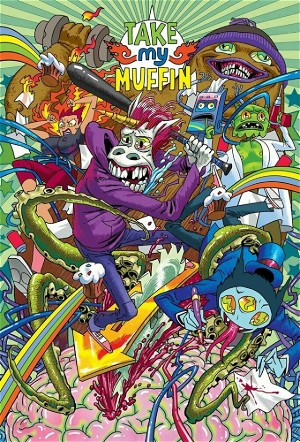

Take My Muffin (2022)
AdventureAnimationComedyFantasy
| Year | 2022 |
|---|---|
| Rating | TV-MA |
| Status | Ongoing |
| Seasons | 1 |
| Episodes | 10 |
| Genre | Adventure, Animation, Comedy, Fantasy |
The story is about a unicorn who has lost his memory, but has the ability to spontaneously give out brilliant startup ideas. To bring back memories, the hero begins to work with an extravagant businessman - a three-eyed cat named Rock.
Episodes
Season 1
| # | Title | Air Date | Synopsis |
|---|---|---|---|
| 1 | Hallucinogenic boogers, the Internet 2.0, and the Waternet | 2022-04-19 | On a highway a car hits a naked unicorn named Korney. He loses consciousness until he awakens in a hospital. The unicorn doesn’t remember who he is, what he was, or how he ended up there. It’s full-blown amnesia! As a ma |
| 2 | The genital adapter & #MeTool | 2022-05-26 | The work on the business model for the Waternet project drags on very slowly. It’s not clear how to even approach it. It’s going to take a long time to get the first tranche from the investors. But Rok needs money right |
| 3 | The darknet 2.0 and divine ICO | 2022-08-18 | Draka has an argument with Rok over the Galanet contract he just signed blind – you can’t do business like that! Draka takes the notebook computer where Rok’s electronic signature is stored and leaves on vacation... |
| 4 | The trash recirculator and Feco-diet | 2022-11-05 | For waste recycling, the Korney come up with a trash recirculator, however, after the experience of being in quantum entanglement, the Noper does the opposite... |
| 5 | The Millennium Challenge and Neurosync | 2022-12-31 | Due to a meeting with an old acquaintance of a professor of mathematics named Epicurus, Noper enters into a battle with the academic community to compete for the prize for the Millennium Problem! But how can only one bra |
| 6 | S.W.O.T. and Spoti-Psy | 2023-04-08 | Rok plans to mass-produce Muffins, but Draka suggests first conducting a SWOT analysis of business performance. Meanwhile, it turns out that Rok crosses the road to the "Garbage King" of the city of San Crypto - Buddy Go |
| 7 | New muffins and the last party | 2023-07-10 | To launch mass production of muffins, Rok is forced to agree to a deal with Buddy, but by the will of fate he finds himself between two fires: Buddy and Kylie. As a result, Rok becomes a servant of two masters, while bei |
| 8 | Harmonizer, Facehook, and ChatTPG | 2023-09-21 | Korney meets with his father and learns the terrible truth. Realizing who he really is, Korney helps his team create incredible new startups. Meanwhile, all the team's property, including the house, passes into the hands |
| 9 | The time machine and intellectual property | 2023-12-14 | Professor Prawn still finds the Korney and shows him what our hero does not want to believe at all. To fix what is happening, Korney has to invent a completely new unique startup that combines several startups — a combin |
| 10 | Quantum Entanglement and Bluelight Inc. | 2024-03-09 | No |